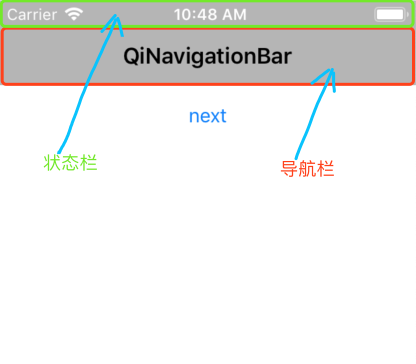
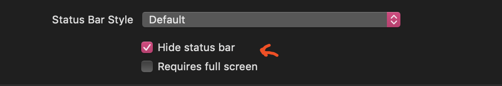
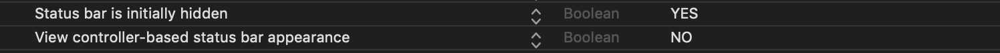
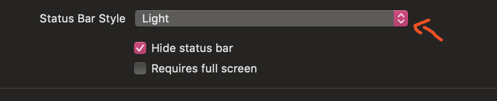
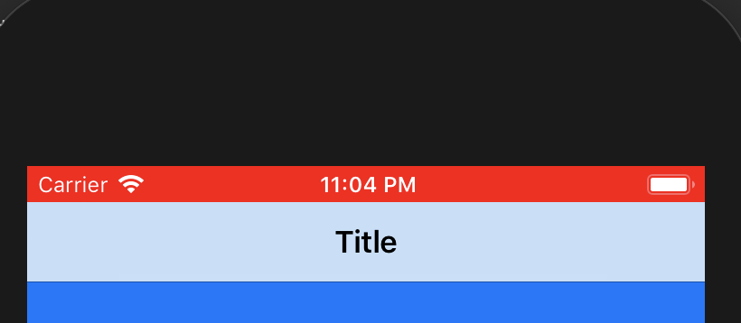
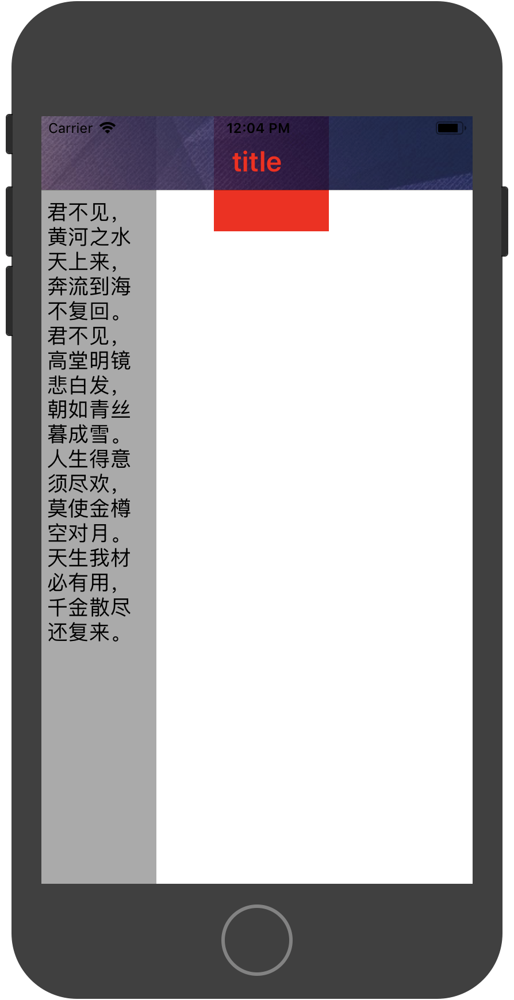

状态栏与导航栏的位置如下图
iOS7之前：状态栏与导航栏是分开的；
iOS7之后：状态栏与导航栏合在一起；导航部分总高度(64)= 状态栏高度(20) +导航栏内容高度((44）
iPhoneX以后：状态栏的高度变为44，导航栏部分总高度(88) = 状态栏(44) + 导航栏内容高度(44)

我们可以通过[UIApplication sharedApplication].statusBarFrame.size获取状态栏的size（一般没有刘海时的高度为20，有刘海时的高度为44）。通过self.navigationController.navigationBar.frame.size来获取导航栏的size。
状态栏
状态栏内容包括信号、时间、电量等，只有两种颜色样式（黑或白）。
获取状态栏frame：
1 | CGRect statusRect = [UIApplication sharedApplication].statusBarFrame; |
状态栏显示和隐藏
全局控制：通过 info.plist设置，或者调用全局方法。
分页控制：在视图控制器里通过 prefersStatusBarHidden方法设置。
全局控制
默认设置或者手动设置 info.plist文件中View controller-based status bar appearance设置为NO，此时状态栏需要全局设置，有两种方式设置。
方法1:
依次进入Targets->General->Deployment Info，然后可进行进行设置如下:

在info.plist文件中添加Status bar is initially hidden设置为YES，则隐藏启动页状态栏，否则反之。和直接在项目中设置相同。

方法2:
代码设置：
1 | //已过时 |
注意：使用代码控制全局的状态栏，代码的位置很重要；在AppDelegate中写入可以设置整个App页面的状态栏样式；
如果需要单独设置其中一个页面隐藏状态栏，需要在进入页面时设置隐藏，退出页面时设置显示，以保证不影响其他页面的状态栏样式。
分页控制
手动设置 info.plist文件中View controller-based status bar appearance设置为YES，此时全局状态设置是无效的，需要分页设置才能修改其样式，即：在每个视图控制器或者控制器基类中使用如下代码：
1 | //重写该方法 |
状态栏颜色
状态栏分前后两个部分，要分清。
- 文字部分：就是指电池、时间等部分
- 背景部分：就是显示黑色或者图片的部分
文字部分
简单来说，就是设置显示电池电量、时间、网络部分标示的颜色， 这里只能设置两种颜色：
1 | //黑色 |
全局控制：通过 info.plist设置，或者调用全局方法。
分页控制：在视图控制器里通过 preferredStatusBarStyle方法设置。
全局设置
默认设置或者手动设置 info.plist文件中View controller-based status bar appearance设置为NO，此时状态栏需要全局设置，有两种方式设置。
方法1:
依次进入Targets->General->Deployment Info，然后可进行进行设置如下:

方法2:
代码设置:
1 | //UIStatusBarStyleDefault | UIStatusBarStyleLightContent |
分页设置
手动设置 info.plist文件中View controller-based status bar appearance设置为YES，此时全局状态设置是无效的，需要分页设置才能修改其样式，即：在每个视图控制器或者控制器基类中使用如下代码：
1 | //重写该方法 |
特别注意：
但是，这里存在一个问题：如果当前视图控制器是UINavigationController的子视图控制器，preferredStatusBarStyle方法并不会被调用。这是因为导航控制器里的preferredStatusBarStyle才具有修改状态栏样式的能力。
解决方法：
- 方法1:添加子类控制器
我们需要使用自定义的子类导航控制器，在其中添加如下的代码：
1 | - (UIStatusBarStyle)preferredStatusBarStyle { |
- 方法2:放弃preferredStatusBarStyle该方法
直接不使用preferredStatusBarStyle方法，而是直接在当前视图控制器中调用如下方法修改状态栏。
1 | //状态栏和导航栏背景色为白色，状态栏文字为黑色 |
背景部分
背景部分，简单来说，就是状态栏的背景颜色，其实系统状态栏的背景颜色一直是透明的状态，当有导航栏时，导航栏背景是什么颜色，状态栏就是什么颜色，没有导航栏时，状态栏背后的视图时什么颜色，它就是什么颜色。
1 | //设置状态栏与到导航栏都是不透明 |
单独设置
1 | /** |
效果图

如果是单独设置某个页面的状态栏背景色，还需要在离开页面时恢复原样。
状态栏常用宏定义
1 |
|
注意：自iOS11之后，Apple引入Safe Area(安全区)的概念，这将是比宏定义更加有效的适配方法。
导航栏
导航栏样式
设置当前导航栏的标题：
1 | self.navigationItem.title = @"title"; |
获取当前导航栏frame：
1 | CGRect navRect = self.navigationController.navigationBar.frame; |
设置导航栏样式可分为全局设置或分页设置
全局设置
全局设置在AppDelegate中设置，在整个app都会生效
1 | //设置导航栏背景颜色 |
分页设置
全局设置后，但是有几个页面需求不同，则也可以进行单独的分页设置。
分页设置的调用方法变为self.navigationController.navigationBar。
并且分页设置需要遵循： 进入页面时修改，离开页面时还原的原则。
1 | //进入页面时设置颜色：灰色 |
导航栏引起的布局问题
当导航栏透明时会出现以下情况：
内容偏移属性：automaticallyAdjustsScrollViewInsets
automaticallyAdjustsScrollViewInsets是视图控制器的一个属性，默认为YES，用于优化滑动类视图(继承于UIScrollView的视图)在视图控制里的显示：
iOS系统的导航栏UINavigationBar与标签栏UITabBar默认都是半透明模糊效果，在这种情况下系统会对视图控制器的UI布局进行优化： 视图控制器里面第一个被添加进去的视图是滑动类视图，并且其Frame是整个屏幕大小时，系统会自动调整其contenInset，以保证滑动视图里的内容不被UINavigationBar与UITabBar遮挡。
但是对于普通的视图，此时我们仍然需要注意：非滑动视图的布局仍然要考虑导航栏和标签栏高度，注意不被遮挡，比如布局的时候加上导航栏高度，以免内容被导航栏遮挡。
我们可以通过一段代码来测试一下效果，在默认导航栏(半透明)的视图控制器里添加如下代码：
1 | //UITextView是滑动视图，内容自动向下偏移，不会被导航栏覆盖 |

这里会发现非滑动视图会被导航栏遮挡，但是滑动视图即使延伸到了导航栏下，但是其内容部分却自动向下偏移了，没有被导航栏遮挡住，这是因为系统自动优化了其内边距。
其实，这种系统的优化也是可以控制关闭的，关闭优化之后，滑动视图就会和普通视图一样，如果还设置其布局的原点是(0,0),其内容就会被导航栏所覆盖，关键代码如下：
1 | //automaticallyAdjustsScrollViewInsets在11.0后失效，所以需要判断 |
边缘延伸属性：edgesForExtendedLayout
edgesForExtendedLayout也是视图控制器的布局属性，默认值是UIRectEdgeAll，即：当前视图控制器里各种UI控件会忽略导航栏和标签的存在，布局时若设置其原点设置为(0,0)，视图会延伸显示到导航栏的下面被覆盖。
所以我们可以设置self.edgesForExtendedLayout=UIRectEdgeNone，此时视图控制器里内容就会避开导航栏和标签栏了。
导航栏透明
导航栏布局问题都是因为导航栏透明度影响，但是需求没有必要透明，那么视图控制器里的控件就会默认从(0,64)开始布局了，设置导航栏不透明的方法如下:
1 | self.navigationController.navigationBar.translucent= NO; |